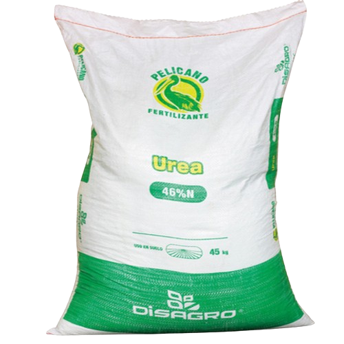
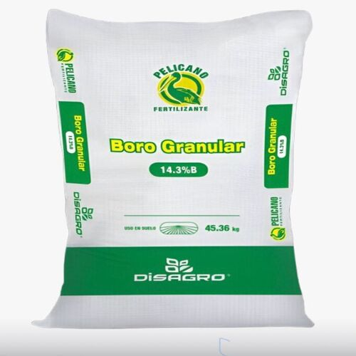
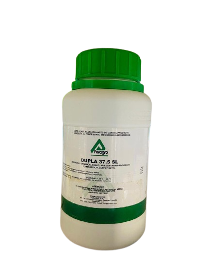
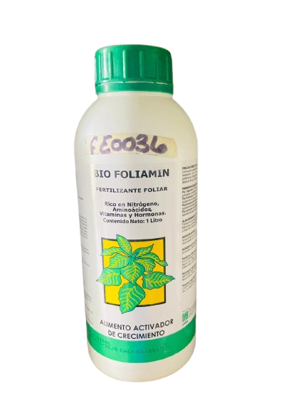
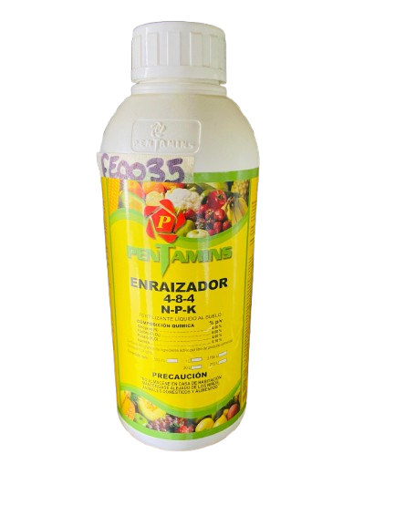

(2).jpg)
 (1).jpg)
.jpg)
.jpg)
Fertilizantes 🌱
Los fertilizantes son sustancias que se aplican al suelo o directamente a las plantas para mejorar su crecimiento y aumentar su productividad. Contienen nutrientes esenciales como nitrógeno (N), fósforo (P) y potasio (K), que las plantas necesitan para desarrollarse sanas y fuertes.

UREA
La urea es un fertilizante químico rico en nitrógeno (46%), utilizado para estimular el crecimiento de hojas, tallos y raíces en los cultivos. Es económica, fácil de aplicar y muy efectiva para mejorar el rendimiento agrícola, especialmente en cultivos como palma, maíz y arroz.
 (1).jpg)
KCL
KCl (cloruro de potasio) es un fertilizante que aporta potasio, esencial para fortalecer raíces, mejorar la calidad de frutos y aumentar la resistencia de las plantas a enfermedades y sequías. Es muy usado en cultivos como palma , maíz y frutas.
.jpg)
18-46-0
(DAP) es un fertilizante que aporta fósforo y nitrógeno, ideal para fortalecer raíces y estimular brotes en etapas iniciales. Muy usado en palma , maíz y hortalizas .

BORO
Borro es un fertilizante orgánico elaborado a base de estiércol de borrego, rico en materia orgánica, potasio y minerales. Mejora la estructura del suelo, estimula nuevos brotes y ayuda a que las plantas absorban mejor otros nutrientes.
.jpg)
PALMERA PLUS
Palmera Plus es un fertilizante formulado especialmente para palmas ornamentales, cocoteros, arecas, y otras especies tropicales. Su objetivo es mejorar el desarrollo vegetal, fortalecer el sistema radicular y mantener un follaje verde y saludable.
 (1).png)
NITRATO DE AMONIO
El nitrato de amonio es un fertilizante muy utilizado en la agricultura por su alto contenido de nitrógeno (N) un nutriente esencial para el crecimiento de las plantas. Su fórmula química es NH₄NO₃ y combina dos formas de nitrógeno: lo que lo hace especial eficaz.
 (1).png)
TECNOSILIX
Tecnosilix es un fertilizante especializado que aporta silicio y magnesio a los cultivos, diseñado para fortalecer las plantas frente al estrés ambiental, plagas y enfermedades. Es fabricado por Grupo Enlasa y se utiliza ampliamente en hortalizas, frutales y ornamentales.
.jpg)
SULFATO DE AMONIO
Sulfato de amonio es un fertilizante que aporta nitrógeno y azufre, ideal para mejorar el crecimiento vegetal y corregir deficiencias en suelos pobres. Muy usado en palma , maíz y hortalizas.
.jpg)
12-24-12
El fertilizante 12-24-12 es una mezcla rica en nitrógeno fósforo y potasio que estimula el crecimiento vegetal fortalece las raíces mejora la floración y aumenta la resistencia de las plantas ideal para etapas de siembra y trasplante en cultivos como hortalizas.
.jpg)
NITROEXTEN
Nitroxtend (también conocido como Nitro Extend) es un fertilizante nitrogenado de alta eficiencia desarrollado por Disagro. Está diseñado para mejorar el aprovechamiento del nitrógeno en los cultivos, reduciendo las pérdidas por volatilización y aumentando la absorción por las plantas.
.jpg)
FERTIPALMA
Fertipalma es un fertilizante especializado diseñado para el cultivo de palma aceitera. Su fórmula balanceada aporta nutrientes clave como nitrógeno, fósforo, potasio, magnesio, azufre, boro y zinc, esenciales para el crecimiento, desarrollo y producción de esta planta.
.jpg)
TRIPLE 15
Triple 15 es un fertilizante que contiene 15% de nitrógeno (N), 15% de fósforo (P) y 15% de potasio (K). Estos tres nutrientes ayudan a que las plantas crezcan fuertes, con buenas raíces, hojas verdes y frutos de calidad.

DUPLA
Dupla es un fertilizante que contiene dos nutrientes esenciales para las plantas, como nitrógeno y fósforo, o nitrógeno y potasio. Se usa para mejorar el crecimiento, raíces o resistencia según la combinación.
.png)
BORRO FOLIAR
Borro foliar es un fertilizante líquido que se aplica sobre las hojas y contiene boro, un micronutriente esencial.

BIO FOLIAMIN
Bio Foliamin es un fertilizante foliar líquido que combina aminoácidos, vitaminas y micronutrientes para estimular el crecimiento y mejorar la salud de las plantas.
.jpg)
BAYFOLAN
Bayfolan sirve para nutrir las plantas directamente a través de las hojas corrige deficiencias de micronutrientes estimula el crecimiento mejora la calidad de los cultivos y fortalece el desarrollo vegetal en etapas clave del cultivo.

ENRAIZADOR
Enraizador Penjamins sirve para fortalecer el desarrollo de raíces en plantas especialmente durante trasplantes o etapas tempranas mientras Bayfolan es un fertilizante foliar.